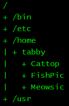

String me along
A string is a sequence of characters. JavaScript gives you various ways to create a string, some common methods being:
- Double quotation marks. Delimit a string by using the double quotation mark
symbol, i.e.
". For example,"This string uses double quotation marks." - Single quotation marks. Use the single quotation mark symbol, i.e.
', to delimit a string. An example is,'This string uses single quotation marks.' - Backticks. The backtick symbol
`works similarly to the single and double quotation marks. However, the backtick allows you to create more flexible strings when you use variables to customize your strings.
The following program uses the above techniques to create various strings.
/**
* Various ways to create strings.
*
* @param {NS} ns The Netscript API.
*/
export async function main(ns) {
let pet = "cat";
let age = 2;
ns.tprint("I'm Sam.");
ns.tprint('I have a cat called "Tabby".');
ns.tprint(`My ${pet} is ${age} years old.`);
}
The above program shows that you can mix single and double quotation marks,
usually under special circumstances. If your string has an apostrophe or a
single quotation mark, as in I'm, then the string should be delimited with
double quotation marks. You can also write "I'm Sam." as 'I\'m Sam.'; notice
the backslash \. I think the version "I'm Sam." is more readable than
'I\'m Sam.'. Remember, you are also writing JavaScript code for other humans
to read. A word in your string might be enclosed within double quotation marks,
e.g. "Tabby", in which case delimit your string using single quotation marks.
You can also use backslash to get "I have a cat called \"Tabby\".", but I
think this is not as readable as 'I have a cat called "Tabby".'. Finally, use
backticks to customize your strings. You can insert the value of a variable
inside a string provided the string is delimited with backticks. Use the
placeholder ${variableName} to insert the value of a variable, as demonstrated
in the above program. Using backticks in this manner is an example of a general
technique called template literal.
Cons and cat
Next, let's discuss another string problem. How to concatenate, or join
together, multiple strings? Suppose you have a variable called firstName that
holds the string "Tabby". You also have a variable called lastName that
holds the string "Whiskers". How would you use both variables to concatenate
the strings they hold into a new string? One way is to use the mathematical
operator + to join the two strings, taking care to insert a space between the
first name and the last name. A second technique consists of using template
literal as discussed above. A third technique is to use the string method
concat().
Every string in JavaScript has this method. The following program uses the above
techniques to concatenate various strings.
/**
* Various ways to concatenate strings.
*
* @param {NS} ns The Netscript API.
*/
export async function main(ns) {
const firstName = "Tabby";
const lastName = "Whiskers";
const a = firstName + " " + lastName; // Use + operator.
const b = `${firstName} ${lastName}`; // Template literal.
const c = firstName.concat(" ", lastName); // Method concat()
ns.tprint(a);
ns.tprint(b);
ns.tprint(c);
}
Why so many ways to join multiple strings together? Each technique is useful in
some circumstances. For example, template literal is often used when you want to
create a custom string. The method
concat()
is used when you want to concatenate multiple strings together, possibly tens or
hundreds of strings. There is a fourth technique that is better suited to
concatenating multiple strings, but we will postpone its discussion to later in
the tutorial.
Exercises
Exercise 1. Write a program to introduce yourself. Use variables and template literals to create strings that contain your full name, age, and favourite food. Print the strings to the terminal.
Exercise 2. Run the program below. What are the output of
typeof? Explain why you got such output./** * What's my type? * * @param {NS} ns The Netscript API. */ export async function main(ns) { const s = "Tabby"; ns.tprint(typeof s); ns.tprint(typeof ""); }Exercise 3. The newline character, written using a backslash as
\n, can be used to break a string into multiple lines. The break only occurs when you print the string. Run the program below to see what you would get. Add two more items to the shopping list: dates and eggs. Insert the items into the same string and ensure each item appears on its own line when printed./** * shopping.js * * Multiline string. * * @param {NS} ns The Netscript API. */ export async function main(ns) { const shoppingList = "\n1. Apples\n2. Bananas\n3. Cherries"; ns.tprint(shoppingList); }Exercise 4. Read more about JavaScript strings here.
Exercise 5. Each string has the method
toLowerCase(), which is used to convert all characters in the string to lower case. Use the method to convert the string"This is A String."to lower case. Print your result to the terminal.Exercise 6. The function
ns.tprint()first prints the name of the script that calls the function, followed by whatever you tell it to output to the terminal. Sometimes you do not want to print the script name because doing so messes up the formatting of your string. Refer to the scriptshopping.jsfrom Exercise 2. We usedns.tprint()and\nto properly format our shopping list. Had we removed the very first newline character\nfrom our string, the resulting shopping list would be out of alignment when output to the terminal. Use the functionns.tprintf()instead. Change the scriptshopping.jsto use the functionns.tprintf(). Remember to remove the leading newline character.Exercise 7. Tabby Whiskers uses a Linux operating system called Tabian. This is what Tabby's directory tree looks like:

Write a program to print Tabby's directory tree.
Exercise 8. Use emoji and colours to spice up your terminal output. Colour effect is achieved by ANSI escape code. Suppose you want to colour the string
"Tabby"as magenta. Use the escape code\u001b[35m(the sequence for magenta) to begin the colouring. End the colouring with the escape code\u001b[0m, which resets the effect of the previous escape code. The colouring effect is achieved as the string"\u001b[35mTabby\u001b[0m". Emoji is much simpler; insert the emoji you want in your string. The following script provides a profile of Tabby./** * tabby-profile.js * * A profile of Tabby the cat. * * @param {NS} ns The Netscript API. */ export async function main(ns) { const cyan = "\u001b[36m"; const red = "\u001b[31m"; const reset = "\u001b[0m"; const name = "Name: Tabby Whiskers"; const pic = "Pic: üê±"; const like = `${cyan}Likes${reset}: fish`; const hate = "Hates: broccoli"; ns.tprintf(`${name}\n${pic}\n${like}\n${hate}`); }Colour the string
"Hates"as red. Tabby likes to play with a yarn ball. Add Tabby's favourite toy to its profile. Read more about ANSI escape code for colours here and here.Exercise 9. Each string in JavaScript has the property
length, which tells you the number of characters in the string, including whitespace characters. To count the number of characters in the string"Tabby Whiskers", use the following program:/** * How many characters are in Tabby's full name? * * @param {NS} ns The Netscript API. */ export async function main(ns) { const name = "Tabby Whiskers"; ns.tprintf(name.length); }In fact, you can shorten the program to the one-liner
ns.tprintf("Tabby Whiskers".length);. Write a program to count the number of letters in the wordsupercalifragilisticexpialidocious. Use your program to calculate the number of characters in the sentenceThe quick brown fox jumps over the lazy dog..